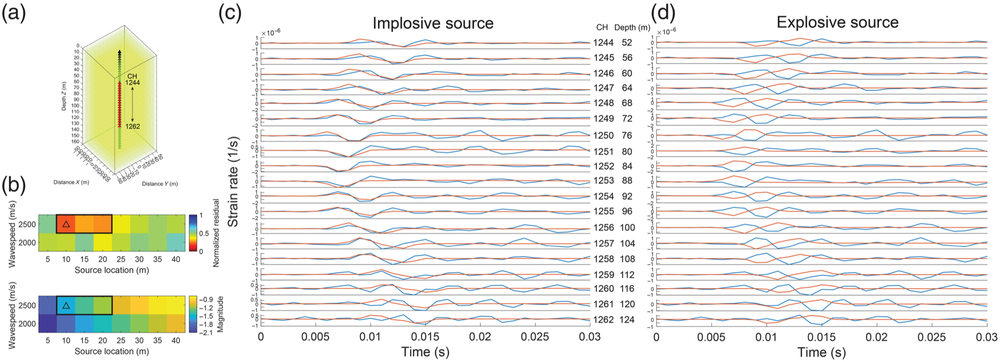
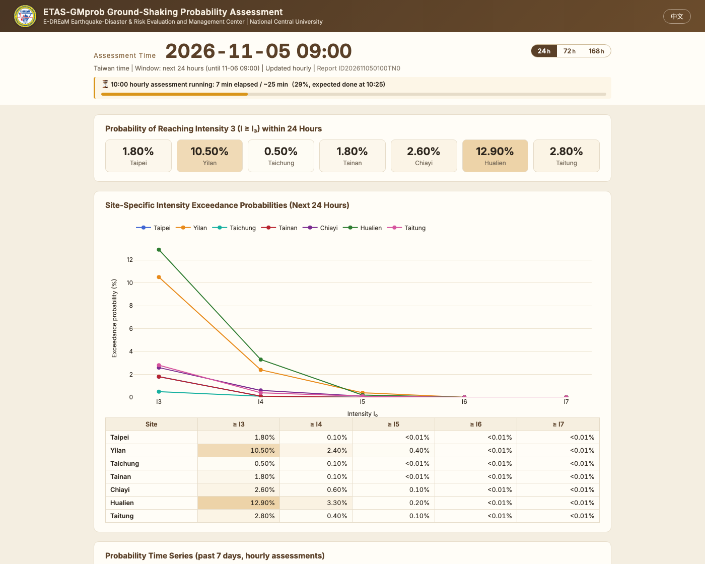

Ming-Che Hsieh 謝銘哲
Associate Research Fellow · Earthquake Disaster & Risk Evaluation and Management Center (E-DREaM), National Central University, Taiwan
I follow an earthquake from the fault to the shaking and to the sequence that follows: finite-fault inversion in 3-D structure, 3-D ground-motion simulation, and real-time earthquake forecasting with the ETAS model.
Research
Finite-fault inversion with 3-D Green's functions
The strain Green's tensor approach makes a waveform inversion in 3-D structure cost little more than one in a layered model; rebuilt on a Taiwan 3-D velocity model, it recovers a synthetic reference slip at correlation 0.96.
OutlookNear-real-time slip models within hours of a large earthquake, and systematic inversions of how Taiwan's earthquakes rupture.
3-D ground-motion simulation and nonergodic ground-motion models
A simulation capability for any region once a scenario is defined, shown on an M 8 Ryukyu scenario and validated against Hualien records up to 8 Hz; the synthetics yield nonergodic path terms that describe how the deep 3-D structure shapes the shaking.
OutlookDynamic rupture as the scenario source, and nonergodic PSHA for eastern Taiwan.
Fault-zone DAS and strain-rate simulation

I modified the traction-image finite-difference code to output the strain-rate wavefield that distributed acoustic sensing measures; its first use explained impulsive events recorded by the Milun Fault borehole fiber right after lightning strikes.
OutlookStrain-rate wavefields of local earthquakes across the Milun fault zone, to constrain its width, velocity reduction and asymmetry.
Real-time earthquake and ground-shaking forecasting

A method that couples the ETAS model with a ground-motion model to forecast seismicity and site-specific shaking together; it runs hourly for Taiwan as ETAS-GMprob and matched the aftershock distribution of the 2024 M 7.2 Hualien sequence.
OutlookDepth-dependent, rupture-aware and Gaussian-process ETAS models, and a precursor study with CNR-IAC Bari that combines VLF radio observations with ETAS, first set up for the Aegean.
Micro-seismic monitoring at CCUS and other sites
ETAS and stochastic declustering separate induced from background seismicity in a local catalog, so that a change in the background rate or a migration of events toward an injection point or a reservoir stands out from ordinary aftershock clustering.
OutlookCO2 storage sites, reservoirs, injection tests and geothermal fields in Taiwan, each a controlled experiment on how fluid pressure triggers earthquakes.
Open projects
ETAS-GMprob
repository →Hourly ground-shaking probability assessment for Taiwan: an ETAS model fitted to the Central Weather Administration catalog, synthetic catalogs, and a ground-motion model give the probability of reaching each intensity level at seven cities over 24, 72 and 168 hours.
FFF3D
repository →A step-by-step walkthrough of a synthetic finite-fault inversion with 3-D strain Green's tensors in a Taiwan velocity model, with inputs, logs and the result report, so that each step can be checked against the expected output.
Selected publications
- Hsieh, M.-C., C.-H. Sung, and Y.-C. Yang (2026). Nonergodic path effects from 3D ground-motion simulations of an M 8 Ryukyu earthquake in eastern Taiwan. Seismol. Res. Lett., doi: 10.1785/0220260149.
- Zhang, W., M.-C. Hsieh, and P.-Y. Chen (2026). Large-scale physics-based broadband (up to 8 Hz) ground-motion simulations of Mw 6.4+ earthquakes for Hualien, Taiwan, area. Seismol. Res. Lett., doi: 10.1785/0220260146.
- Lin, Y.-Y., H.-H. Huang, M.-C. Hsieh, et al. (2026). Lightning-induced implosive microseismic events at depth detected by downhole distributed acoustic sensing in Taiwan. Seismol. Res. Lett. 97, 2290–2302, doi: 10.1785/0220250432.
- Hsieh, M.-C., C.-H. Chan, K.-F. Ma, et al. (2024). Toward real-time ground-shaking-intensity forecasting using ETAS and GMM: Insights from the analysis of the 2022 Taitung earthquake sequence. Seismol. Res. Lett. 95, 3264–3277, doi: 10.1785/0220240180.
- Hsieh, M.-C., L. Zhao, C. Ji, and K.-F. Ma (2016). Efficient inversions for earthquake slip distributions in 3D structures. Seismol. Res. Lett. 87, 1342–1354, doi: 10.1785/0220160050.